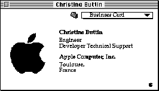
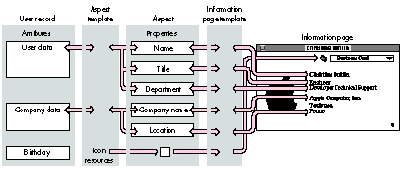
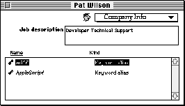
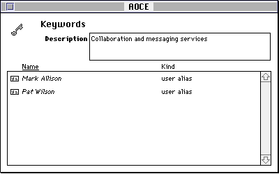

Apple Open Collaboration Environment (AOCE) catalogs can contain any kind of data,
which users can browse and edit using the Finder. Developers and knowledgeable end
users can write AOCE templates, which add new record types to catalogs and tell the
Finder how to display the data. This article describes AOCE templates and provides an
example of using templates to extend PowerTalk's built-in User records to contain
your own data.
Personal computers are great for storing large amounts of related data. Databases
make it possible to organize data and to find individual items quickly, but it takes a
long time to set up a database and enter data into it. If you're a system administrator or
in-house developer and you want to provide a database for use by others, you also have
to worry about providing and maintaining the database software for everyone involved.
If you're using PowerTalk, however, you already have a way to store information:
AOCE catalogs. What's more, the related Catalogs Extension (CE) to the Finder allows
users to browse and edit catalog records with the Finder.
The Human Resources group at Apple Computer France wanted to create a directory of
Apple personnel that included each person's name, title, department, address, and a
list of keywords to identify areas of expertise. Furthermore, the group wanted to be
able to list everyone with a particular area of expertise. Since Human Resources uses
a PowerShare collaboration server, there was already a catalog with a User record
containing all of the information for everyone with an account on the server, except
for areas of expertise. What better way to create the directory than to add the new
keyword data to the User records? To list people related to a specific keyword, the
group could create keyword records by adding a new record type to the AOCE catalog in
which the data was stored.
The User records that are defined as part of the PowerTalk system software store
information such as a person's name, title, phone number, and electronic address.
PowerTalk uses AOCE templates -- resource files that go in the Extensions folder in
the System Folder -- to tell the CE how to store and display the data. This article
shows you how to write AOCE templates that extend User records to hold additional
information (keywords identifying areas of expertise) and templates that define a new
record type (keyword records). Although writing templates doesn't necessarily
require writing any code resources at all, you can do more by adding code resources to
your templates. This article goes on to demonstrate how to use a code resource to keep
records synchronized that refer to each other's data. You'll find all the example code on
this issue's CD. Even if you're not using a PowerShare server, you can use the
approach described in this article to store data in a personal catalog on your own
Macintosh.
To get the most out of this article, you should have PowerTalk installed on your
computer and have spent a little time playing with catalogs. Acatalog is a
hierarchically arranged store of data. The bottom level of the catalog hierarchy is
therecord , which is analogous to a file in the Macintosh hierarchical file system
(HFS). Unlike files, however, when the user double-clicks a record, the application
that opens the record is the Finder itself. How the contents of the record are stored in
the catalog and displayed to the user is determined by sets of resources in files known
asAOCE templates .
For the complete story on AOCE, see Inside Macintosh: AOCE Application
Interfaces.*
A PowerShare collaboration server stores the name and account information of each
entity (person, gateway, or whatever) that has an account on the AOCE server in a
server-based catalog. It uses User records for this purpose. A personal catalog looks
much like a server-based catalog but is, in fact, an HFS file on the local disk. There's
practically no difference between a record in a server-based catalog and one in a
personal catalog; AOCE templates work identically in both cases.
The data in records is organized intoattributes . Each attribute has a type (for
example, address or area of expertise) and any number of attribute values, which can
contain any sort of data. Each attribute type is defined by a template that specifies the
format for the data. You can write new templates to expand the types of attributes that
existing record types can contain -- that's precisely what this article does, in fact.
When the user double-clicks an AOCE catalog record in the Finder, a window called
aninformation page window opens. An information page window can contain a single
information page, or several information pages, each with a pop-up menu listing the
other pages. Each information page displays data stored in the record. The window in
Figure 1 shows an information page that displays data stored in a User record.
The CE uses a two-step process to get from a record to an information page. Because
there's not necessarily a one-to-one correspondence between attribute values and the
data you want to display on an information page, the first step consists of parsing the
data in the attribute values into discrete units of data known asproperties . For
example, an address attribute value may contain street, city, and zip code properties.
The second step is to specify exactly where and how each property is displayed on the
information page.
Two types of AOCE templates specify how the CE performs each of these steps:
These aspect and information page templates share a data structure in memory that
contains the properties. This data structure is called anaspect . The relationships
among records, aspect templates, aspects, information page templates, and information
pages are illustrated in Figure 2.
There are a few important things to note about these relationships:

Figure 1. An information page window

Figure 2. Getting from a record to an information page
Every template contains asignature resource that indicates the type of the template and
specifies some other template characteristics. In addition, there are other resources
that are required for every template (such as the template name resource), resources
that are required for specific template types, and a variety of optional resources that
you can include if needed.
The CE identifies each resource by its resource type and by the offset of its resource ID
from the resource ID of the signature resource. For example, the template name
resource and the record type resource (which specifies what type of record the
template applies to) are both 'rstr' resources; the CE can distinguish between them
because the template name resource's ID is equal to the signatureresource's ID plus the
constant value kDETTemplateName, while the record type resource has an ID offset of
kDETRecordType.
Aspect templates contain a resource called alookup table . The lookup table contains the
instructions to the CE for parsing attribute values into properties and properties into
attribute values. If the CE needs a property that has a property number in the range 0
to 249, and it doesn't find a value for that property that the lookup table constructed
from an attribute value, it looks for a resource with an ID offset equal to the property
number. This means that in the aspect template itself you can provide property values
to be used as default values, initial values, or constant values for properties.
Information page templates contain one or more resources calledview lists , which
specify the views that appear on the information page. Aview is an item or a field on
an information page displaying one or more property values (for example, a text field
or a radio button).
Unlike the ID of other template resources, a view list's resource ID isn't related to the
signature resource's ID. Instead, the information page template's signature resource
includes references to all the view lists for that template. For each view list, the
signature resource includes two property numbers that identify properties associated
with that view list. The view list is active only if the values of its two associated
properties are equal. You can use this feature to implementconditional views , that is,
information-page features that the CE displays only under certain circumstances.
Figure 3 shows another common feature of information pages -- asublist . A sublist is
a portion of the information page that contains a list of attribute values or records. In
Figure 3, the sublist holds two records (actually, it holds aliases to the records).
Typically, when the user double- clicks an item in a sublist, the same two-step
process as described earlier in the section "From Records to Information Pages"
occurs; as a result, another information page opens and displays the information
associated with the attribute or record represented by the selected item. For example,
double-clicking the AOCE item in Figure 3 opens an information page displaying all
people with that expertise (as shown in Figure 4 later in this article).

Figure 3. Information page with a sublist
All the property values displayed on an information page outside the sublist come from
a single aspect, called themain view aspect . This aspect also provides the list of items
to be included in the sublist (if any).
Each item in a sublist has its own aspect, called amain aspect , which provides the
property values necessary to display the item in the sublist (such as the name of a
record or the kind of attribute value). A main aspect can contain other property values
as well; in fact, a main aspect can also serve as the main view aspect for an
information page. If you want to create a new information page for an existing record,
you must provide a main view aspect template for that information page. If you're
defining a new record type to be displayed in a sublist, you need to provide a main
aspect template for that record type. The example in this article demonstrates how to
create a main view aspect template and an information page template that extend the
User record to hold keywords. It then shows how to create the main aspect template
needed in order to list keyword records in the new User record information page
sublist.
Now we're ready to define the aspect template for the new information page, which is a
main view aspect template. The main view aspect template serves as the aspect
template for everything on the new User record information page except for the
content of the sublist items. Aspect templates contain a signature resource, a name
resource, a record type resource, resources that specify how to handle objects dropped
on the information page, resources for handling the View menu and Balloon Help, and
the all-important lookup table.
SIGNATURE, NAME, AND RECORD TYPE RESOURCES
The ID of the aspect template signature resource, of type 'deta', provides the base
resource ID for the other aspect template resources. The signature resource also
makes some settings related to drag and drop operations, as discussed in the next
section, and specifies whether this template is a main aspect template.
resource 'deta' (kEInfoPageAspect, purgeable) {
0, // Drop-operation order
dropCheckAlways, // Drop-check flag
notMainAspect // Not the main aspect template
};
In our example, the aspect template defines the properties for the new information
page being added to an existing record type -- "aoce User." Because User records
already have a main aspect template provided as part of the PowerTalk system
software, you don't have to provide one yourself. In fact, declaring a template to be the
main aspect template for User records would cause a conflict and the User records
would no longer work correctly.
To replace an existing main aspect template, you use a killer template,
which is not covered in this article. See Inside Macintosh: AOCE Application Interfaces
for more on killer templates.*
Aspect templates, like other templates, have a name that must be unique to be
identified by other templates. To guarantee uniqueness, start the names of all your
templates (as well as all the new record types and attribute types for which you
provide main aspect templates) with your four- character application signature as
registered with Apple's Developer Support Center. Here's our aspect template name
resource:
resource 'rstr' (kEInfoPageAspect+kDETTemplateName, purgeable) {
"ACFC InfoPage aspect"
};
The record type resource identifies the record that the aspect applies to, in this case
the User record:
resource 'rstr' (kEInfoPageAspect+kDETRecordType, purgeable) {
"aoce User"
};
Although we're going to be defining a new attribute type that goes in User
records, we don't provide a resource (of type kDETAttributeType) to specify that
attribute type for the aspect template. In fact, if an attribute type were specified for
the aspect template, the CE could use the template only for that attribute type and could
not use it to modify the User record itself. (If the new attribute type were in a sublist
and we provided a main aspect template to describe how that attribute should appear in
the sublist, that main aspect template would contain a kDETAttributeType resource, as
shown in the sample code on this issue's CD.)*
DRAG AND DROP RESOURCES
The aspect template drag and drop resources in the sample code make it possible for
users to drag keyword records and drop them either on a closed User record or directly
on a sublist on an information page, thereby adding those records to the sublist.
The kDETAspectRecordDragIn resource specifies what types of records can be dropped
on a sublist. Because the CE can't actually store a record in a record, it adds to the
sublist an attribute containing an alias to the dropped record. For each type of record
the user can drag in, you also need to specify the type of attribute to store the alias in.
The following resource indicates that aliases to keyword records should be stored as
attribute type "ACFC Alias keyword":
resource 'rst#' (kEInfoPageAspect+kDETAspectRecordDragIn,
purgeable) {
{
"ACFC Keywords", "ACFC Alias keyword"
}
};
The drop-operation order and drop-check flag in the aspect template signature
resource (shown in the previous section) come into play during these drag and drop
operations, as follows:
You also need to define the prompt message, which can include parameters (token^2 is
the destination's name, and token^3 is the dragged record's name).
resource 'rstr' (kEInfoPageAspect+kDETAspectDragInString,
purgeable) {
"Do you want to add %3%"^3"%the selected items% to the "
"company info for "^2"?"
};
In this example, dragging the keyword record named "AppleScript" onto John's
business card produces the message "Do you want to add AppleScript to the company
info for John?" If the user drags several items at once, the CE substitutes "the selected
items" for the name of the dragged item.
VIEW MENU COMMANDS AND BALLOON HELP
When a template contains a sublist, the user determines how data is sorted in the
sublist by choosing from the Finder's View menu (for example, "by Name" or "by
Kind") or by clicking the labels above the sublist ("Name" and "Kind" in Figure 3).
For these features to work, you have to provide the items for the View menu and
specify which properties are used for sorting in each case. Our example uses the
metaproperties (properties that are provided by the CE and that don't correspond to
specific attribute values): kDETPrName (the record's name) and kDETPrKind (the
record's kind).
resource 'detm' (kEInfoPageAspect+kDETAspectViewMenu, purgeable) {
kEInfoPageAspect+kDETAspectViewMenu,
{
kDETPrName, "by Name";
kDETPrKind, "by Kind";
}
};
You also need to add Balloon Help strings for properties. Each property has two
strings: the first one is displayed if the property is editable, the second one if it's not.
The first pair of text strings corresponds to the first property, the second pair to the
second property, and so on. In our example, there's only one property (the employee's
job description):
resource 'rst#' (kEInfoPageAspect+kDETAspectBalloons, purgeable) {
{
"Description of the employee's job", "Description :"
" Uneditable because the record is locked or access controlled."
}
};
THE LOOKUP TABLE
As mentioned earlier, the lookup table tells the CE how to parse attribute values into
properties and how to convert property values into attributes. For each property that
you want to use on an information page, the lookup table must contain an entry that
describes how to process the property's associated attribute. An attribute is identified
by an attribute type and an attribute value tag:
A single lookup table entry can specify how to parse more than one attribute type, but
only if they have the same attribute value tag. You can provide separate lookup table
entries for input (that is, translating attribute values to properties) and output
(translating properties to attribute values), but you must provide both.
Each lookup table entry contains a set of flags that indicate the following:
The entry also includes elements that specify what to do with the attribute. Each
element consists of three parts: a format that drives the parsing process, a property
number, and an extra parameter used in certain types of elements. The format can be a
simple data type that specifies how many bytes of data to take from the attribute and
how to store it in the property. For example, a format of type 'word' takes the next two
bytes from the attribute value and puts it in a number-type property. In the other
direction, it would take two bytes from a number-type property and store it in an
attribute value.
Lookup tables are complex and can be used in more ways than described here.
For more information, see Inside Macintosh: AOCE Application Interfaces.*
In our example, there are two attribute types: one contains the description of an
employee's job (attribute type "ACFC Company Empext Function"); the second is
multivalued and contains the list of keywords or users (contact people, not discussed
in this article), which are records in the catalog. There are two entries in the lookup
table, one for each attribute type: the first one maps the attribute value to a string
property (kFunction, defined on the CD); the second is for sublist items, each of which
is a record of type "ACFC Alias keyword." The notForOutput and notForInputflags are
set for the items in the sublist because sublist items are described in their own main
aspects, not in the main view aspect that defines the sublist.
resource 'dett' (kEInfoPageAspect+kDETAspectLookup, purgeable) {
{
{"ACFC Company Empext Function"}, typeBinary,
useForInput, useForOutput, notInSublist, isNotAlias,
isNotRecordRef,
{
'rstr', kFunction, 0; // An element
};
{"ACFC Alias keyword"}, typePackedDSSpec,
notForInput, notForOutput, useInSublist, isAlias,
isNotRecordRef,
{};
}
};
As described earlier in "What's in a Template," an information page template
specifiesthe contents and layout of an information page. It includes one or more view
lists, which describe the different views on the page, such as text fields or radio
buttons. When your information page contains a sublist, you must include a view list
describing an entry in the sublist. The CE uses this view list to display appropriate
information for each item of the sublist, such as an icon and the name of the item.
SIGNATURE, NAME, AND TYPE RESOURCES
The information page template signature resource provides the resource IDs of the
view lists associated with the information page, as well as two property numbers for
each view list. As discussed earlier, if the values of these two properties are not equal,
the CE doesn't display the views described by the view list.
The signature resource also specifies the sort-order number of the information page,
the presence or absence of a sublist in the information page, and the rectangle that
contains the sublist (if any). The CE displays the information pages in the sequence
indicated by their sort-order numbers.
resource 'deti' (kEInfoPage, purgeable) {
4000, // Sort-order number
{kSublistTop, kSublistLeft, kSublistBottom, kSublistRight},
noSelectFirstText,
// Don't automatically select the first editable
// text field when the information page is opened.
{
kDETNoProperty, kDETNoProperty, kEInfoPage;
},
{
kDETNoProperty, kDETNoProperty, kEInfoPage+1;
}
};
As with the aspect template, you need to include resources that provide the template
name and the type of record the template applies to:
resource 'rstr' (kEInfoPage+kDETTemplateName, purgeable) {
"ACFC 1stInfoPage"
};
resource 'rstr' (kEInfoPage+kDETRecordType, purgeable) {
"aoce User"
};
OTHER REQUIRED RESOURCES
Because there's more than one information page for the User record, you need to
provide the string that gets displayed in the information page pop-up menu used for
changing to a different page:
resource 'rstr' (kEInfoPage+kDETInfoPageName, purgeable) {
"Company Info"
};
You also need to provide the name of the aspect template that defines the properties
used by the information page:
resource 'rstr' (kEInfoPage+kDETInfoPageMainViewAspect, purgeable) {
"ACFC InfoPage aspect"
};
VIEW LISTSOur example has two view lists: the first describes the views (graphical
elements) of the information page, and the second describes an entry in the sublist. To
complete the information page template, you need to define these view lists (see
Listing 1). A view list contains the following information for each view:
Listing 1. Defining the view lists
resource 'detv' (kEInfoPage, purgeable) {
{
// Icon
{6, 156, 22, 172}, kDETNoFlags, kDETAspectMainBitmap,
Bitmap {kDETSmallIcon};
// Static text
{kFunctionTop, kFunctionLeft, kFunctionBottom, kFunctionRight},
kDETNoFlags, kDETNoProperty,
StaticTextFromView {kDETApplicationFont,
kDETApplicationFontSize,
kDETRight, kDETBold,
"Job description"};
// Editable text
{kTEFunctionTop, kTEFunctionLeft, kTEFunctionBottom,
kTEFunctionRight}, kDETMultiLine, kFunction,
EditText {kDETApplicationFont, kDETApplicationFontSize,
kDETLeft, kDETNormal};
// Sublist label: "Name"
{kSublistSeeAlsoTop, kSublistSeeAlsoLeft,
kSublistSeeAlsoBottom, kSublistSeeAlsoRight},
kDETNoFlags, kDETPrName,
StaticCommandTextFromView {kDETDefaultFont,
kDETDefaultFontSize, kDETLeft, kDETUnderline,
"Name", kDETChangeViewCommand, -1};
// Sublist label: "Kind"
{kSublistKindTop, kSublistKindLeft,
kSublistKindBottom, kSublistKindRight},
kDETNoFlags, kDETPrKind,
StaticCommandTextFromView {kDETDefaultFont,
kDETDefaultFontSize, kDETLeft, kDETNormal,
"Kind", kDETChangeViewCommand, -2};
// Sublist box
{kSublistTop-1, kSublistLeft-1,
kSublistBottom+1, kSublistRight+1}, kDETNoFlags,
kDETNoProperty, Box {kDETUnused};
}
};
// Sublist view list -- description of an entry in the sublist
resource 'detv' (kEInfoPage+1, purgeable) {
{
// Icon
{kDETSublistEntryTop, kDETSublistIconColumnLeft,
kDETSublistEntryBottom, kDETSublistIconColumnRight},
kDETEnabled, kDETAspectMainBitmap, Bitmap {kDETMiniIcon};
// Record's name
{kDETSublistEntryTop, kSeeAlsoColumnLeft,
kDETSublistEntryBottom, kSeeAlsoColumnRight},
kDETEnabled+kDETDynamicSize, kDETPrName,
EditText {kDETDefaultFont, kDETDefaultFontSize,
kDETLeft, kDETItalic};
// Record's type
{kDETSublistEntryTop, kKindColumnLeft,
kDETSublistEntryBottom, kKindColumnRight},
kDETEnabled+kDETDynamicSize, kDETPrKind,
EditText {kDETDefaultFont, kDETDefaultFontSize,
kDETLeft, kDETNormal};
}
};
The aspect and information page templates are now defined, adding a new information
page for User records. However, there's still work to do before the user can create
keyword records -- you need to provide aspect and information page templates for this
new record type.
MAIN ASPECT TEMPLATE FOR KEYWORD RECORDS
Since the new record type appears in a sublist, you need to provide a main aspect
template (as shown in Listing 2).
A main aspect template is similar to the aspect template defined earlier, but it
includes some additional resources:
Listing 2. Main aspect template for keyword records
resource 'deta' (kKeywordAspect, purgeable) {
0, // Drop-operation order
dropCheckAlways, // Drop-check flag
isMainAspect // Is the main aspect
};
resource 'rstr' (kKeywordAspect+kDETTemplateName, purgeable) {
"ACFC Keywords Aspect"
};
resource 'rstr' (kKeywordAspect+kDETRecordType, purgeable) {
"ACFC Keywords"
};
resource 'rstr' (kKeywordAspect+kDETAspectKind, purgeable) {
"Keyword"
};
resource 'rst#' (kKeywordAspect+kDETAspectCategory, purgeable) {
{
"Miscellaneous"
}
};
// Icons
include "Keywords.rsrcs" 'ICN#'(128) as
'ICN#'(kKeywordAspect+kDETAspectMainBitmap, purgeable);
include "Keywords.rsrcs" 'icl4'(128) as
'icl4'(kKeywordAspect+kDETAspectMainBitmap, purgeable);
include "Keywords.rsrcs" 'icl8'(128) as
'icl8'(kKeywordAspect+kDETAspectMainBitmap, purgeable);
include "Keywords.rsrcs" 'ics#'(128) as
'ics#'(kKeywordAspect+kDETAspectMainBitmap, purgeable);
include "Keywords.rsrcs" 'ics4'(128) as
'ics4'(kKeywordAspect+kDETAspectMainBitmap, purgeable);
include "Keywords.rsrcs" 'ics8'(128) as
'ics8'(kKeywordAspect+kDETAspectMainBitmap, purgeable);
include "Keywords.rsrcs" 'SICN'(128) as
'SICN'(kKeywordAspect+kDETAspectMainBitmap, purgeable);
include "KeywordsInfoPageAspect.code" 'code'(1) as
'detc'(kKeywordAspect+kDETAspectCode, purgeable);
// Drag and drop resources
resource 'rstr' (kKeywordAspect+kDETAspectDragInString, purgeable) {
"Add “^3” to “^2”?"
};
resource 'rst#' (kKeywordAspect+kDETAspectRecordDragIn, purgeable) {
{
"aoce User", kMemberAttrTypeBody
}
};
// View menu and Balloon Help resources
resource 'rstr' (kKeywordAspect+kDETAspectNewMenuName, purgeable) {
"New Keyword"
};
resource 'rstr' (kKeywordAspect+kDETAspectNewEntryName, purgeable) {
"Untitled Keyword"
};
resource 'rst#' (kKeywordAspect+kDETAspectBalloons, purgeable) {
{
"Keyword description", "Keyword description : uneditable because"
" the record is locked or access controlled."
}
};
resource 'rst#' (kKeywordAspect+kDETWhatIs, purgeable) {
{
"Keyword \n \nA keyword record. Open this icon to see a"
" description of this keyword and a list of people who have"
" this job skill."
}
};
resource 'rst#' (kKeywordAspect+kDETAliasWhatIs, purgeable) {
{
"Keyword alias \n \nAn alias to a keyword record. Open this"
" alias to see a description of this keyword and a list of"
" people who have this job skill."
}
};
resource 'detm' (kKeywordAspect+kDETAspectViewMenu, purgeable) {
kKeywordAspect+kDETAspectViewMenu,
{
kDETPrName, "by Name";
kDETPrKind, "by Kind";
}
};
// Lookup table
resource 'dett' (kKeywordAspect+kDETAspectLookup, purgeable) {
{
{"ACFC Keyword Description"}, typeRString,
useForInput, useForOutput, notInSublist, isNotAlias,
isNotRecordRef,
{'rstr', prDescription, 0};
{kMemberAttrTypeBody}, typePackedDSSpec,
notForInput, notForOutput, useInSublist, isAlias,
isNotRecordRef,
{};
}
};
INFORMATION PAGE TEMPLATE FOR KEYWORD RECORDS
Upon double-clicking a keyword record, the user expects an information page to
appear, as shown in Figure 4. Defining the information page template for the keyword
record is similar to defining the information page template for the User record, as
described earlier. You include signature, name, type, and optional resources along
with the view lists. The resource definitions are provided on this issue's CD.

Figure 4. Keyword record information page
As illustrated earlier in Figure 3, the sublist in the new User record information page
lists the areas of expertise of the employee described by that record. Each area of
expertise is represented by an alias to a keyword record. The sublist in a keyword
record lists all the employees who have expertise in the area described by that
keyword record (as shown in Figure 4). To keep these two lists synchronized, both the
aspect template for the new information page we added to the user template and the
keyword record's aspect template include a code resource. Each time someone adds a
User record to a keyword record's sublist, the keyword record's code resource adds
that keyword to the User record's sublist; each time someone adds a keyword record to
a User record's sublist, the User record's code resource adds that user to the keyword
record's sublist.
The code resources of the two templates are exactly the same because the structure of
the attributes in both the records is identical, as described in the lookup table entry of
the two aspect templates.
The following line adds the code resource to the aspect template:
include "UserInfoPageAspect.code" 'code'(1) as
'detc'(kEInfoPageAspect+kDETAspectCode, purgeable);
The CE calls code resources when certain events occur, such as a change in an attribute
or a drag and drop action. If the code resource doesn't handle the event, it must return
a kDETDidNotHandle result code; if it successfully handles the event, it returns noErr.
The CE calls the code resource's main routine, passing it a pointer to a parameter
block (see Listing 3). This call block indicates which event occurred and contains
additional parameters specific to the event.
DODROPQUERY
The CE calls your code routine with a drop-query command (that is, with the
kDETcmdDropQuery selector) when the user drops an object on the object that your
aspect template applies to. If you want your code resource to handle the drop operation,
return a value that's in the developer property-value range (that is,
kDETFirstDevProperty through 249) in the commandID field of the call block.
Listing 3. The code resource's main routine
#define prChangeRec kDETFirstDevProperty
/* Entry point called by the CE */
pascal OSErr KeywordsIP (DETCallBlock* callBlockPtr)
{
OSErr err = noErr;
if (callBlockPtr->protoCall.target.selector == kDETSelf ||
callBlockPtr->protoCall.target.selector ==
kDETSublistItem)
switch (callBlockPtr->protoCall.reqFunction) {
case kDETcmdInit:
/* Call-for masks */
callBlockPtr->init.newCallFors =
kDETCallForCommands + kDETCallForDrops;
break;
case kDETcmdDropQuery:
err = DoDropQuery(callBlockPtr);
break;
case kDETcmdPropertyCommand:
err = DoCommand(callBlockPtr);
break;
default:
err = kDETDidNotHandle;
break;
}
else err = kDETDidNotHandle;
return err;
}
In our example (shown in Listing 4), we accept a record when the user drops it on a
record that the template applies to by checking the commandID parameter provided by
the CE and accepting drops only when the commandID value is kDETAlias. For other
values, we inform the CE that we don't manage these cases by returning the constant
kDETDidNotHandle. When we accept the drop operation, DoDropQuery returns the
value prChangeRec in response to the drop-query command. When it receives a
property number in response to the drop-query command, the CE calls the code
resource again, this time with a property command (that is, with the selector
kDETcmdPropertyCommand).
The property command's call block includes the property number specified in
response to the drop- query command. The property-command code can use this
property number as a routine selector. In our example, DoCommand checks to make
sure the property number is prChangeRec. If it is, DoCommand calls DoAddRecord
(more on this in a moment).
Most of the time, a resource doesn't handle all the CE events; therefore, to avoid the
overhead resulting from frequent calls to the code resource, each template has a
"call-for" mask that indicates which events to invoke it for. You must return the
call-for mask when the CE calls the code resource with the kDETcmdInit selector. The
kDETcmdInit case of the switch statement in Listing 3 returns a call-for mask that
indicates that the code resource should be called only for property commands and drop
queries.
Listing 4. DoDropQuery and DoCommand
/* Called when an object is dropped onto a record. Just set up a
property number (prChangeRec) to be sent to the target aspect. */
OSErr DoDropQuery (DETCallBlock* callBlockPtr)
{
DETTargetSelector theDET;
/* What is the best guess of the CE regarding the dropped */
/* object? */
if (((DETDropQueryBlock*)callBlockPtr)->commandID == kDETAlias) {
/* Make an alias of the dropped object. */
((DETDropQueryBlock*)callBlockPtr)->copyToHFS = false;
((DETDropQueryBlock*)callBlockPtr)->commandID = prChangeRec;
return noErr;
}
else
return kDETDidNotHandle;
}
/* Called when the CE sends a property command. We check that it's
the property we expect. */
OSErr DoCommand (DETCallBlock* callBlockPtr)
{
OSErr err = noErr;
/* Check whether called for the prChangeRec command. */
switch (((DETPropertyCommandBlock*)callBlockPtr)->property) {
case prChangeRec:
err = DoAddRecord(callBlockPtr);
break;
default:
err = kDETDidNotHandle;
break;
}
return err;
}
DOADDRECORD
When the CE calls DoCommand with the property number prChangeRec, DoCommand
calls DoAddRecord (Listing 5). DoAddRecord needs to add data to a record, so it must
first identify which record is the target of the drop. To do so, it calls the CE's
kDETcmdGetDSSpec callback routine, passing it the kDETSelf target selector.
DoAddRecord then extracts the reference number of the personal catalog and the record
ID from the record's DSSpec that was returned by the callback routine. To find out how
many objects were dropped (that is, for how many dropped objects the drop-query
routine returned the same property number), DoAddRecord calls the CE's
kDETcmdGetCommandSelectionCount callback routine.
Listing 5. DoAddRecord
/* When record A is dragged onto record B, this function updates
record A to store an alias to record B and updates record B to
store an alias to record A. Updates occur only if records are of
the required type. */
OSErr DoAddRecord (DETCallBlock* callBlockPtr)
{
DETCallBackBlock cbb, cbb1, cbb2;
short PABrefNum;
RecordID targetRID, receivedRID;
LocalIdentity userLocalId;
PackedDSSpec *targetDSSpec, *droppedDSSpec;
DSSpec dsp, dsp1;
OSErr err;
long count, i;
Str255 targetAttrType, droppedAttrType;
#ifdef USER
Str255 theStr = "ACFC Keywords";
RString recType;
OCECToRString(theStr, smRoman, &recType, kRStringMaxBytes);
#endif
/* Find out target record DSSpec. */
cbb.getDSSpec.target.selector = kDETSelf;
cbb.getDSSpec.reqFunction = kDETcmdGetDSSpec;
err = CallBackDET(callBlockPtr, &cbb);
if (err != noErr)
return err;
HLock((Handle) cbb.getDSSpec.dsSpec);
targetDSSpec = *(cbb.getDSSpec.dsSpec);
/* Get record ID. */
PABrefNum = cbb.getDSSpec.refNum;
userLocalId = cbb.getDSSpec.identity;
OCEUnpackDSSpec(targetDSSpec, &dsp, &targetRID);
/* Find out how many records have been dropped. */
cbb1.getCommandSelectionCount.reqFunction =
kDETcmdGetCommandSelectionCount;
err = CallBackDET(callBlockPtr, &cbb1);
if (err != noErr) {
DisposeHandle((Handle) cbb.getDSSpec.dsSpec);
return err;
}
count = cbb1.getCommandSelectionCount.count;
for (i = 1; i <= count; i++) {
/* Get the DSSpec of dropped record. */
cbb1.getCommandItemN.reqFunction = kDETcmdGetCommandItemN;
cbb1.getCommandItemN.itemNumber = i;
cbb1.getCommandItemN.itemType = kDETDSType;
err = CallBackDET(callBlockPtr, &cbb1);
if (err == noErr) {
HLock((Handle) cbb1.getCommandItemN.item.ds.dsSpec);
droppedDSSpec = *(cbb1.getCommandItemN.item.ds.dsSpec);
OCEUnpackDSSpec(droppedDSSpec, &dsp1, &receivedRID);
/* Check type of record. */
#ifdef USER
if (OCEEqualRString(receivedRID.local.recordType,
&recType, kOCERecordType)) {
strcpy(targetAttrType, kMemberAttrTypeBody);
strcpy(droppedAttrType, "ACFC Alias keyword");
#else
if (OCEEqualRString(receivedRID.local.recordType,
OCEGetIndRecordType(kUserRecTypeNum),
kOCERecordType)) {
strcpy(targetAttrType, "ACFC Alias keyword");
strcpy(droppedAttrType, kMemberAttrTypeBody);
#endif
/* Update target record to set up dropped record as
an attribute of this record. */
AddRecordAsAttribute(userLocalId, droppedDSSpec,
&targetRID, PABrefNum, droppedAttrType);
/* Update dropped record to set up target record as
an attribute of the dropped record. */
AddRecordAsAttribute(userLocalId, targetDSSpec,
&receivedRID, PABrefNum, targetAttrType);
}
HUnlock((Handle) cbb1.getCommandItemN.item.ds.dsSpec);
DisposeHandle
((Handle) cbb1.getCommandItemN.item.ds.dsSpec);
}
else
break;
}
if (err == noErr) {
/* Ask for immediate update. */
cbb2.requestSync.target =
((DETPropertyCommandBlock*)callBlockPtr)->target;
cbb2.requestSync.reqFunction = kDETcmdRequestSync;
err = CallBackDET(callBlockPtr, &cbb2);
}
DisposeHandle((Handle) cbb.getDSSpec.dsSpec);
return err;
}
DoAddRecord calls the CE's kDETcmdGetCommandItemN callback routine for each object
dropped. Dropped objects can be of different types, such as catalog items, files, and
letters. In our example, the only kind of objects we want to add to our sublist are
keyword records and User records, so DoAddRecord requests only information of type
kDETDSType to get a packed DSSpec for each dropped record. If the targeted record is a
User record, DoAddRecord checks to make sure the dropped record is a keyword record.
If the targeted record is a keyword record, DoAddRecord checks to make sure the
dropped record is a User record. It uses the AOCE utility routine OCEEqualRString to
check the record type.
ADDRECORDASATTRIBUTE
If the dropped record is the right type, DoAddRecord calls AddRecordAsAttribute, which
is shown in Listing 6. AddRecordAsAttribute calls the Catalog Manager's
DirAddAttributeValue routine to add the dropped object to the record. The parameter
block for DirAddAttributeValue includes parameters that identify the catalog
containing the record to be modified, the record itself, and the attribute to be added.
The attribute specification includes the attribute type, the attribute value tag, and the
attribute value.
Listing 6. AddRecordAsAttribute
/* This routine adds an attribute as a DSSpec to a record. */
void AddRecordAsAttribute(LocalIdentity userLocalId,
PackedDSSpec* theDSSpec, RecordIDPtr updatedRecord,
short refNum, Ptr attrType)
{
OSErr err;
Attribute theAttribute;
DirParamBlock dspb;
AttributeType kwRType;
/* Prepare the attribute; set up its type and the data within
the attribute. */
OCECToRString(attrType, smRoman, (RString *) &kwRType,
kAttributeTypeMaxBytes);
theAttribute.attributeType = kwRType;
theAttribute.value.tag = typePackedDSSpec;
theAttribute.value.dataLength =
theDSSpec->dataLength+sizeof(theDSSpec->dataLength);
theAttribute.value.bytes = (Ptr) theDSSpec;
/* Prepare the parameter block used by the Catalog Manager to
add an attribute. */
*(long *)&dspb.addAttributeValuePB.serverHint = nil;
dspb.addAttributeValuePB.dsRefNum = refNum;
/* refNum of a personal catalog */
dspb.addAttributeValuePB.identity = userLocalId;
dspb.addAttributeValuePB.aRecord = updatedRecord;
/* Record to be modified */
dspb.addAttributeValuePB.attr = &theAttribute;
/* Attribute to be added */
dspb.addAttributeValuePB.clientData = 0;
err = DirAddAttributeValue(&dspb, false);
}
To maintain the synchronization between the User record and the keyword record, you
also need to update the dropped record, adding the target record as an attribute of the
dropped one. You can use the same routine -- AddRecordAsAttribute -- because the
structure of the attributes in the two records is the same -- the record to be updated
is now the dropped record and the attribute value is the DSSpec of the target record.
SUMMARY
To summarize what happens when a drag and drop action occurs:
When you compile the templates, you get a PowerTalk extension that can be installed in
the Extensions folder of the System Folder. Users who install these templates can
display and edit new information about users in User records in their personal
catalogs. The system administrator or anyone who has sufficient access privileges can
use the new keyword records and the new User record information page to maintain
this information for everyone who has a PowerShare account.
The benefit in extending User records is that all the information regarding a person is
stored in the same place and therefore is very easy to retrieve. The work involved in
developing this customized solution is much less than that typically involved in
developing a database. What's more, AOCE catalogs are part of system software -- why
pay more for new database software and servers?
This article has shown a relatively easy way to extend the templates that come built
into PowerTalk. As you become more familiar with AOCE templates, you'll
undoubtedly think of more complex things you can do with templates and template code
resources.
The next article, "Exploring Advanced AOCE Templates Through Celestial Mechanics,"
describes one imaginative use of templates. Another use might be to define different
kinds of templates for different people, giving them access to different types of data in
the same catalog.
Imagine a traditional library using a catalog to store references to books: A
specializedtemplate could provide information on a book, including keywords related to
the topics in the book. A keyword template would let users browse the catalog and find
all the books available on a specific topic. And to dream a bit further, the catalog could
be a very large database on a distant system that you access by dialing up. It would
contain all the references in the world of existing books, and you could consult it from
your home, just by browsing the catalog through the Finder. The book information page
might even contain a button that could open the electronic version of the book.
So go ahead and take advantage of AOCE catalogs. Apply what you've learned about
expanding records through AOCE templates and begin building the world of connectivity
and information sharing that you dream about.
CHRISTINE BUTTIN has worked in Developer Technical Support for Apple since
1989, first for Apple Computer Europe and now for Apple France. At the office, they
call her the talkative woman, not only because she enjoys chatting, but also because
she mainly supports technologies that enable communication (such as AppleTalk,
AppleScript, AOCE). When not talking, she spends most of her time practicing Aikido
or traveling (she has a special love for the Sahara Desert, where she's sure to be far
away from computers). An extra benefit of her job is that she can regularly visit the
U.S., where she has made many good friends. Visiting her American friends might not
be as restful as a trip to the Sahara Desert, but it certainly is a lot of fun.*
Thanks to our technical reviewers David Akhond, Paul Black, Harry Chesley, and
Steve Falkenburg. Special thanks to Paul Black for writing the background material on
AOCE catalogs and templates. *